Manuale software AppPlant
Una pubblicazione di Donatoni Macchine S.r.l.
Versione Software: 1.2
Versione Manuale: 0.0
Sezione B
ISTRUZIONI ORIGINALI
Generalità
Le informazioni contenute in questo documento sono applicabili solamente alle versioni software riportate nel frontespizio.
È possibile che non tutte le funzioni esplicabili dal prodotto siano descritte nella presente documentazione; in questi casi Donatoni Macchine S.r.l. non è comunque obbligata a garantire queste funzioni né a preservarle nelle future versioni.
Scopo del manuale
Questo manuale riporta le istruzioni d’utilizzo necessarie per la buona conoscenza del programma D-Plant e informazioni utili per trovare soluzioni a malfunzionamenti.
Dall'osservanza di quanto descritto in questo manuale dipende il regolare funzionamento, la durata e l'economia di esercizio della macchina stessa.
Il manuale d’uso e manutenzione della macchina e il presente manuale software devono essere sempre reperibili nel luogo d’installazione dell’impianto, in posto sicuro e facilmente accessibile. Se uno di essi viene smarrito contattare il responsabile del servizio prevenzione e protezione.
La mancata osservanza di quanto descritto in questo manuale, la negligenza, un cattivo e inadeguato uso della macchina, possono essere causa di annullamento, da parte della Ditta Costruttrice, della garanzia che essa dà alla macchina stessa, ed inoltre si possono non ottenere i vantaggi per cui questa macchina è stata costruita.
La DONATONI MACCHINE SRL, è comunque a disposizione per assicurare una pronta ed accurata assistenza tecnica e tutto quanto può essere utile per il miglior funzionamento ed ottenere il massimo della resa dalla macchina.
La Ditta Costruttrice, si riserva il diritto di modificare, a propria discrezione, la presente pubblicazione ed i dati in essa contenuti qualora lo ritenesse necessario per un miglioramento tecnico o commerciale del prodotto.
Conservazione del manuale
Il presente Manuale Software deve essere custodito per tutta la vita operativa della macchina, anche in caso di cessione a terzi.
Al fine di conservare correttamente il Manuale Software si raccomanda:
Impiegare il Manuale in modo tale da non danneggiare tutto, od in parte, il contenuto; in particolare si raccomanda di non abbandonare il Manuale durante l'utilizzo e di riporlo nel luogo assegnato immediatamente dopo il termine della consultazione;
Non asportare, strappare o riscrivere per alcun motivo le parti del Manuale;
Conservare il Manuale in zone protette da umidità, calore ed altri agenti ambientali che potrebbero pregiudicarne l'integrità o la durata;
In caso di smarrimento o danneggiamento di tutto o parte del contenuto del presente Manuale, richiedere copia di tale documentazione al Costruttore.
Utenti
Questo documento contiene informazioni rivolte a:
Operatore macchina
Tecnico autorizzato ad effettuare assistenza
Uso del documento
Il documento è suddiviso in capitoli che descrivono:
Conoscenza della struttura software
Funzioni della macchina in modalità manuale
Funzioni da touch screen
Diagnosi e soluzione degli allarmi
Notifica dei problemi
Per gli eventuali problemi che si dovessero presentare durante lo studio di questo documento, contattare il servizio assistenza Donatoni Macchine S.r.l.
L’applicativo consente di gestire la configurazione dello scarico da parte del robot e la programmazione delle stazioni di scarico.
L’applicativo è composto da più pagine selezionabili dal menù a comparsa sulla sinistra, ognuna delle quali gestisce una funzionalità.
Le pagine sono le seguenti:
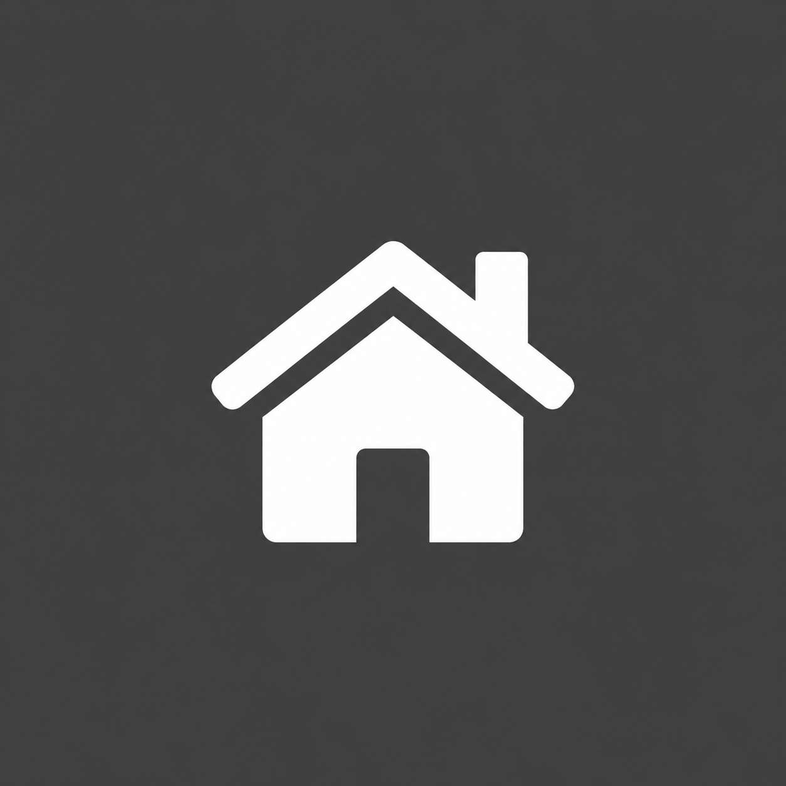 | HOME |
SERVIZI | |
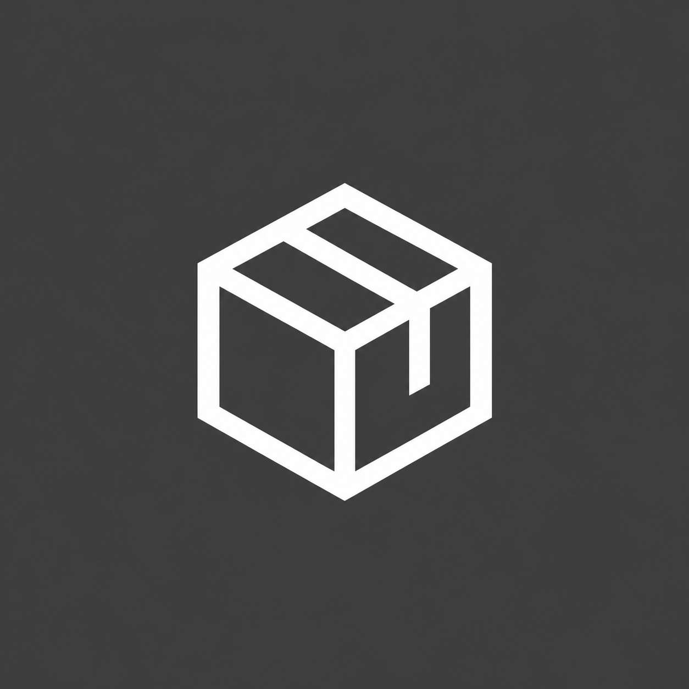 | PALLETS |
GRIPPERS | |
STAZIONI | |
MATERIALI | |
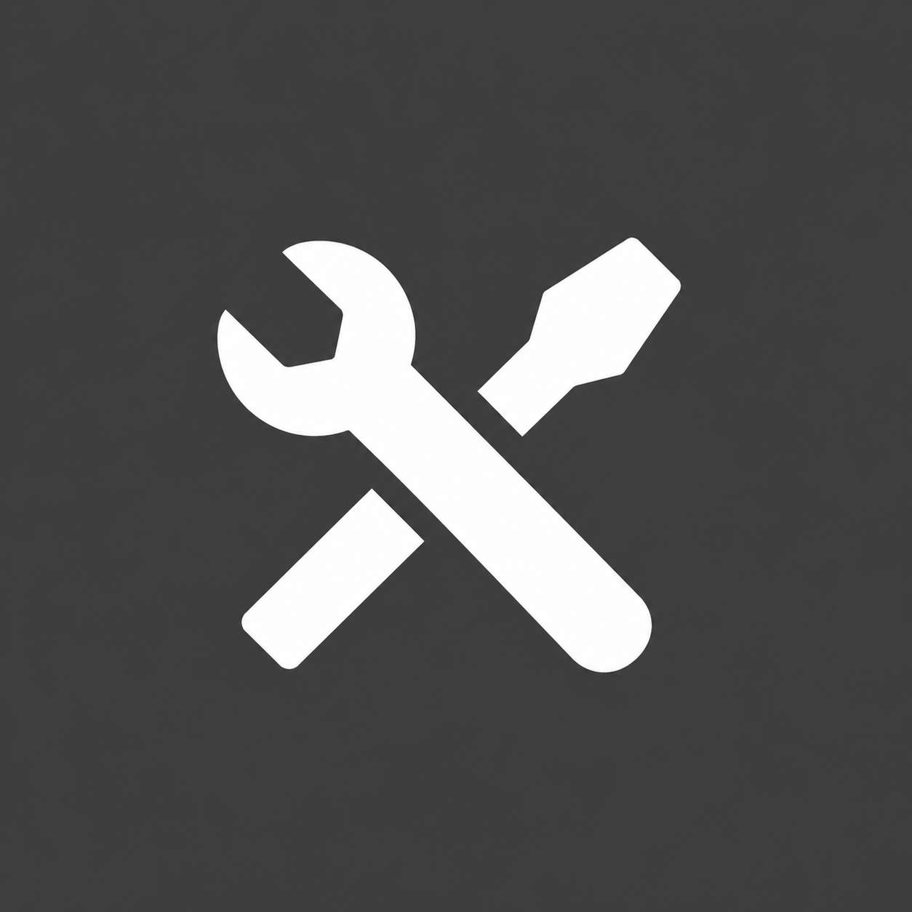 | STRUMENTI |
STATISTICHE |
Nel seguito verranno descritte le varie pagine del software.
La pagina Home può assumere aspetti anche molto diversi in base alla configurazione impostata.
Configurazioni di impianto
Di seguito sono riportati alcuni esempi di configurazioni D-Plant
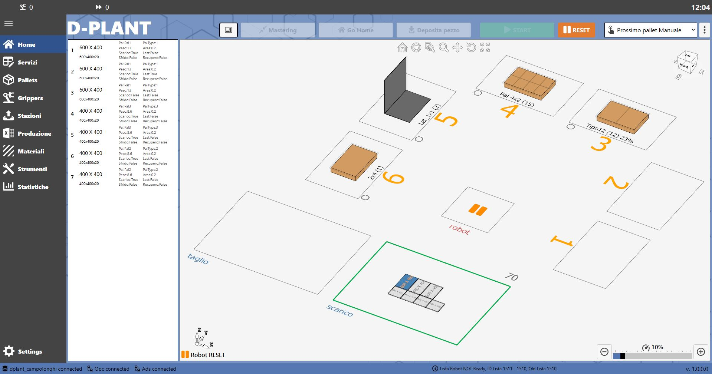 | A) Scarico presa singola con nastro taglio e scarico diversi |
 | B) Scarico presa multipla |
 | C) Scarico presa singola di due macchine con nastro unico |
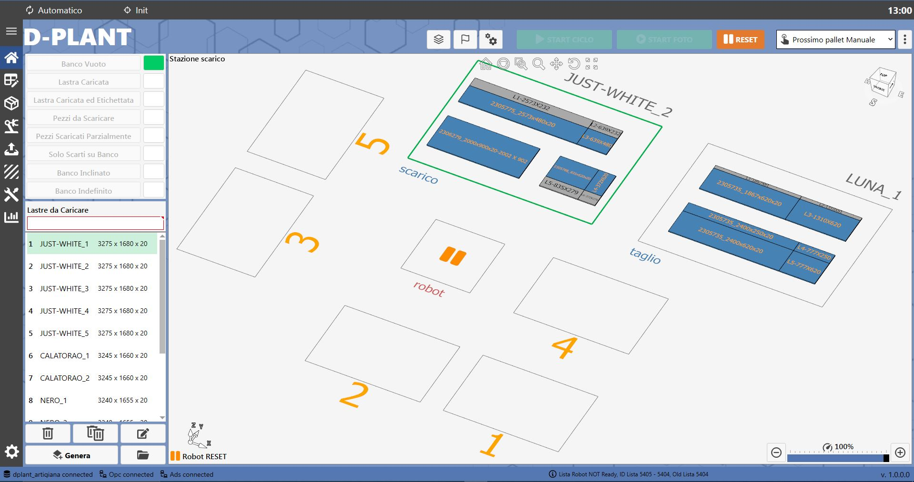 | D) Carico e scarico presa singola |
Informazioni di stato
La pagina “Home” è la pagina di avvio del software, dove è possibile visualizzare alcune informazioni:
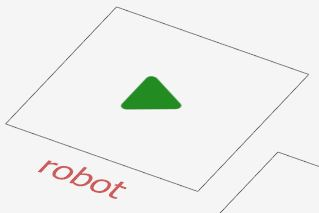
Lo stato Operativo del robot:
FREE | |
 | RESET |
 | ACTIVE EXT |
STOP | |
 | Identifica lo stato dello scarico |
 | Gripper a bordo |
 | N_ pezzo in scarico |
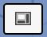 | Visualizza pezzi in scarico  |
 | Mastering |
Homing | |
 | Deposita pezzo |
Start | |
 | Reset |
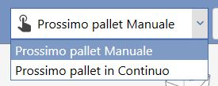 | Prossimo pallet |
Menù correzione frame | |
 | Velocità di lavoro robot |
 | Zona di taglio |
 | Zona di scarico |
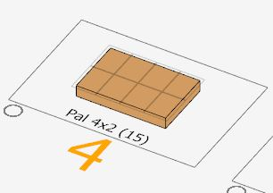 | Stazione di deposito |
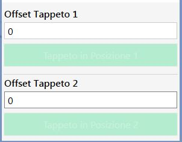 | Offset tappeto Inoltre, sotto entrambi i valori modificabili, un pulsante color verde chiaro permette all’operatore di forzare il tappeto in posizione. |
Formato pezzi in scarico multiplo | |
 | Menù lastre da caricare  |
Lastre da caricare | Se il modello lo prevede (es il modello D), l’operatore può indicare il numero delle lastre che desidera caricare. |
 | Cancella lastra da caricare |
 | Cancella tutte le lastre da caricare |
 | Modifica dati lastra da caricare |
Genera lastra da caricare  | |
Carica file gestione lastre | |
Menù scenario di inizio | |
Mastering e Homing | |
 | Invio comando di foto lastra |
Menu nella zona di scarico o di taglio
Tasto DX nella zona di scarico o di taglio

 | INSERISCI LAVORAZIONE 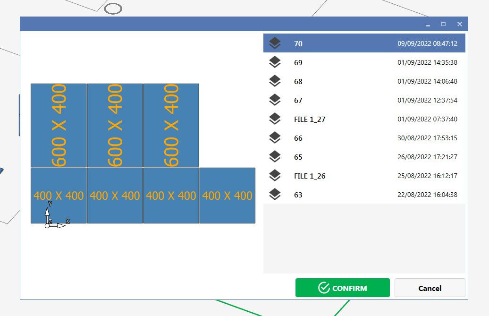 |
 | CANCELLA SCARICO |
 | VISUALIZZA/NASCONDI PALLETS 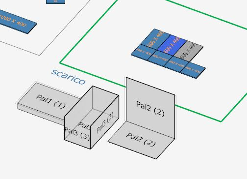 |
 | ATTIVA/DISATTIVA SCARICO PEZZO |
 | MODIFICA PALLET  |
Menu nella zona di deposito
Premendo il tasto destro nella zona di deposito, apparirà il seguente menù per azioni che riguardano i pallet.
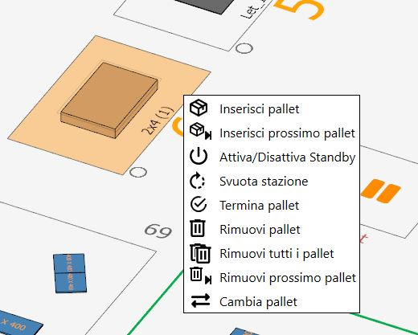
INSERISCI PALLET  | |
 | INSERISCI PROSSIMO PALLET |
 | ATTIVA/DISATTIVA STANDBY |
 | SVUOTA STAZIONE |
TERMINA PALLET | |
 | RIMUOVI PALLET |
 | RIMUOVI TUTTI I PALLET |
 | RIMUOVI PROSSIMO PALLET |
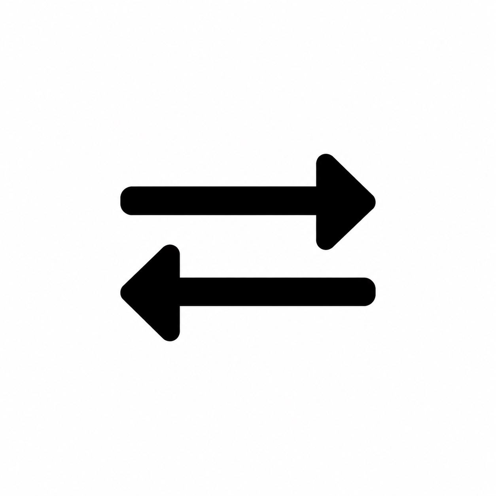 | CAMBIA PALLET |
La pagina Servizi offre le seguenti funzionalità che verranno illustrate nei successivi capitoli:
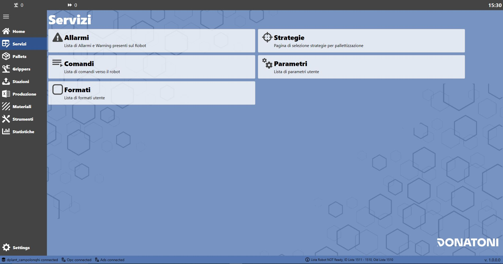
Allarmi | |
Comandi | |
Formati | |
Strategie | |
Parametri |
Nella pagina allarmi è possibile visualizzare i messaggi di errore attivi e lo storico
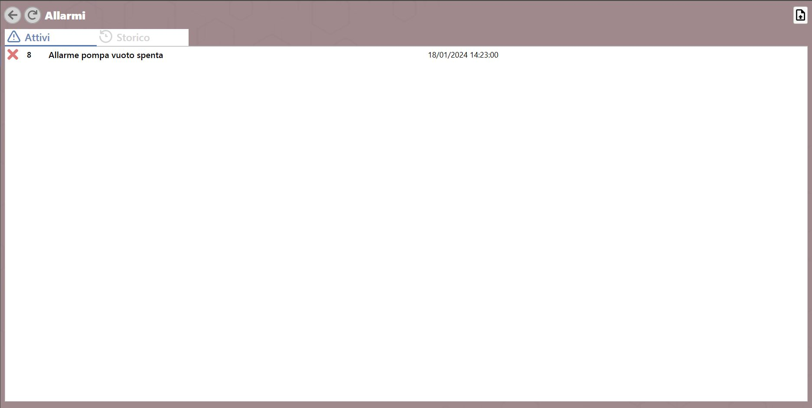
Esporta lista |
Nella pagina strategie è possibile visualizzare e modificare le varie strategie della logica di scarico, variano in funzione del modello.
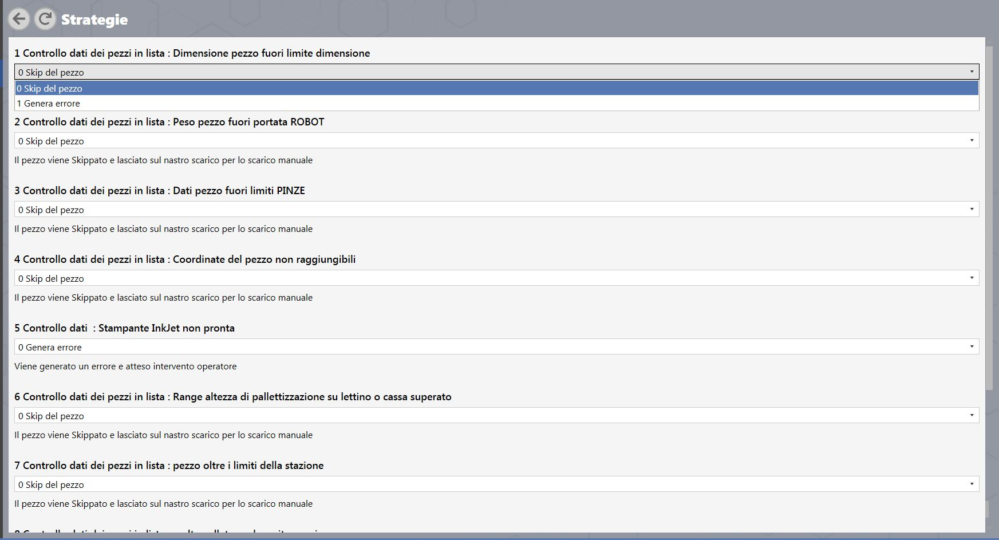
Nella pagina comandi è possibile visualizzare e forzare determinati comandi e gestire varie abilitazioni, variano in funzione del modello.
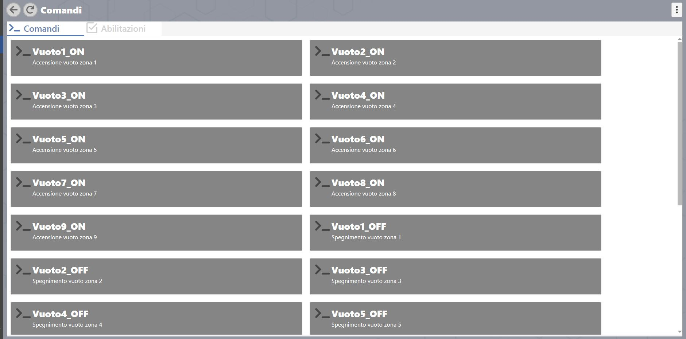
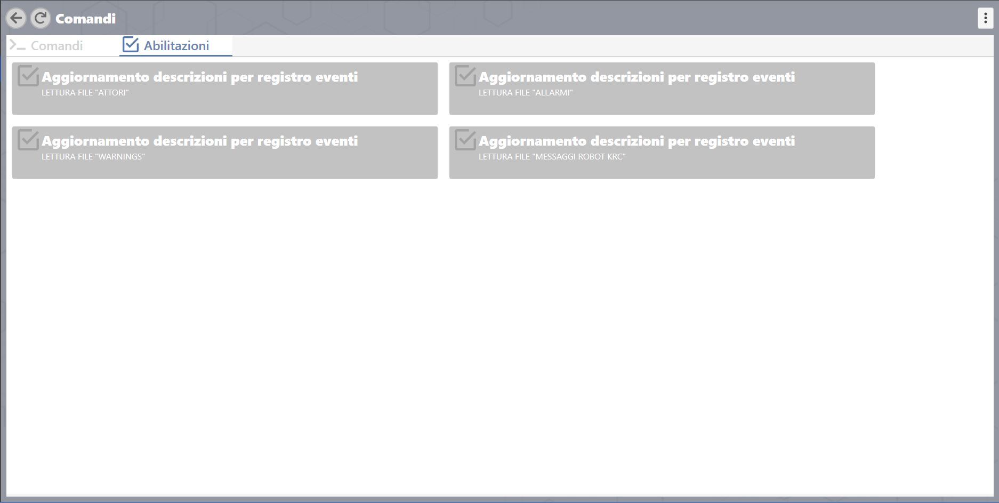
Nella pagina parametri è possibile visualizzare e modificare il valore di determinati parametri dell’impianto, variano in funzione del modello.
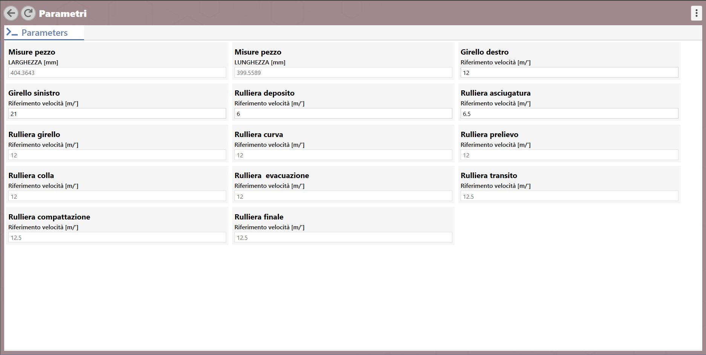
La pagina formati consente di visualizzare (se previsto da modello es. B ):

Parametri formato attivo
Nella sezione “formati” è possibile visualizzare e modificare i parametri del formato attivo:
Codice | nome della tipologia del formato. |
Lunghezza | lunghezza del pezzo. |
Larghezza | larghezza del pezzo. |
Spessore | spessore del pezzo. |
Materiale | la tipologia di materiale del pezzo. |
Numero di prese | pezzi presi simultaneamente. |
Peso | peso del pezzo. |
Orientamento iniziale | orientamento pezzi in uscita dalla macchina. |
Orientamento finale | orientamento pezzi in presa per il robot. |
Lista Formati
La lista formati invece è un elenco di tutte le diverse tipologie di formato di pallettizzazione utilizzate.

Barra superiore in lista formati
I seguenti pulsanti offrono all’operatore funzioni per il formato selezionato:
 | Imposta |
 | Nuovo |
 | Elimina |
 | Modifica |
 | Duplica |
La pagina Contenitori offre le seguenti funzionalità che verranno illustrate nei successivi capitoli:
Tipo convertitori | Questa pagina permette di gestire la tipologia di contenitori. |
Nuovo o modifica contenitore | Questa sezione permette di gestire i contenitori e crearne di nuovi. |
Dettagli Contenitore | In questa pagine è possibile gestire i dettagli dei contenitori. |
Questa pagina permette di gestire la tipologia di contenitori:

Barra superiore
I seguenti pulsanti sono collocati sul lato destro della barra superiore:
Nuovo | |
 | Elimina |
 | Modifica |
 | Duplica |
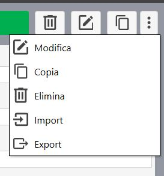 | Menù |
Questa sezione permette di gestire i contenitori e crearne di nuovi.
Sezioni
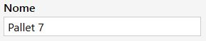 | Nome |
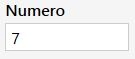 | Numero |
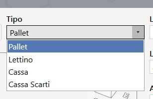 | Tipo
|
Modifica 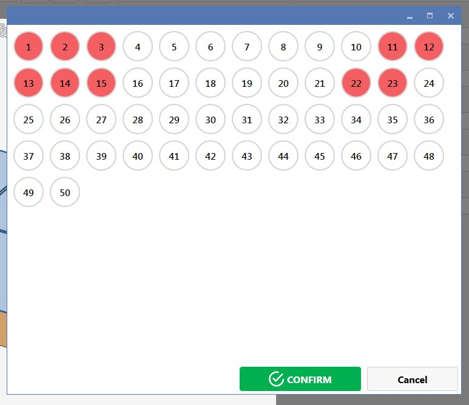 | |
 | Elimina |
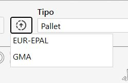 | Modifica parametri |
In questa pagine è possibile gestire i dettagli dei contenitori.
Pallet
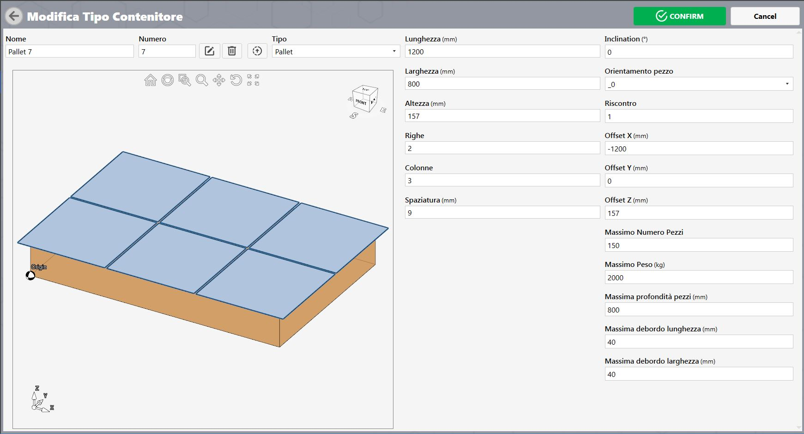
Lunghezza | Lunghezza del contenitore |
Larghezza | Larghezza del contenitore |
Altezza | Altezza del contenitore |
Righe | Righe pezzi da depositare nel contenitore |
Colonne | Colonne pezzi da depositare nel contenitore |
Spaziatura | Distanza fra un pezzo e il suo vicino |
Inclinazione | Inclinazione lungo asse X del pallet |
Orientamento pezzi |  0: lunghezza pezzo → lunghezza pallet |
Riscontro | Numero del riscontro di appoggio del contenitore |
Offset X | Quota X da riscontro selezionato a origine contenitore |
Offset Y | Quota Y da riscontro selezionato a origine contenitore |
Offset Z | Quota Z da riscontro selezionato a origine contenitore |
Massimo numero pezzi | Massimo numero di pezzi depositabili |
Massimo peso | Massimo peso sopportato dal contenitore |
Massima profondità pezzi | Massima profondità/altezza pallettizzabile nel contenitore |
Massimo debordo lunghezza | Debordo/spazio disponibile in lunghezza oltre alla fine del contenitore per ogni lato |
Massimo debordo larghezza | Debordo/spazio disponibile in larghezza oltre alla fine del contenitore per ogni lato |
Lettino

Lunghezza | Lunghezza del contenitore. |
Larghezza | Larghezza del contenitore. |
Altezza | Altezza del contenitore. |
Righe | Righe pezzi da depositare nel contenitore. |
Colonne | Colonne pezzi da depositare nel contenitore. |
Spaziatura | Distanza fra un pezzo e il suo vicino di un’altra colonna. |
Inclinazione | Inclinazione lungo asse X del pallet. |
Orientamento pezzi | 0: lunghezza pezzo → lunghezza pallet. |
Riscontro | Numero del riscontro di appoggio del contenitore. |
Offset X | Quota X da riscontro selezionato a origine contenitore. |
Offset Y | Quota Y da riscontro selezionato a origine contenitore. |
Offset Z | Quota Z da riscontro selezionato a origine contenitore. |
Massimo numero pezzi | Massimo numero di pezzi depositabili. |
Massimo peso | Massimo peso sopportato dal contenitore. |
Massima profondità pezzi | Massima profondità/altezza pallettizzabile nel contenitore. |
Massimo debordo larghezza | Debordo/spazio disponibile in larghezza oltre alla fine del contenitore per ogni lato. |
Massimo debordo altezza | Debordo/spazio disponibile in altezza oltre alla fine del contenitore verso l’alto. |
Intervallo altezza min | Altezza minima dei pezzi depositabili nel contenitore. |
Intervallo altezza max | Altezza massima dei pezzi depositati nel contenitore. |
Base Ortogonale |  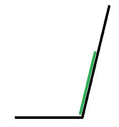 Con flag a ON il piano sottostante del contenitore è parallelo al pavimento.   Con flag a OFF lo schienale del contenitore forma 90_ con il piano sottostante. |
Spaziatura interfalda | Distanza fra un pezzo e il suo vicino di un’altra riga. |
Cassa

Lunghezza | Lunghezza del contenitore. |
Larghezza | Larghezza del contenitore. |
Altezza | Altezza del contenitore. |
Righe | Righe pezzi da depositare nel contenitore. |
Colonne | Colonne pezzi da depositare nel contenitore. |
Spaziatura | Distanza fra un pezzo e il suo vicino di un’altra colonna. |
Inclinazione | Inclinazione lungo asse X del pallet. |
Orientamento pezzi | 0: lunghezza pezzo → lunghezza pallet. |
Riscontro | Numero del riscontro di appoggio del contenitore. |
Offset X | Quota X da riscontro selezionato a origine contenitore. |
Offset Y | Quota Y da riscontro selezionato a origine contenitore. |
Offset Z | Quota Z da riscontro selezionato a origine contenitore. |
Massimo numero pezzi | Massimo numero di pezzi depositabili. |
Massimo peso | Massimo peso sopportato dal contenitore. |
Massima profondità pezzi | Massima profondità/altezza pallettizzabile nel contenitore. |
Massimo debordo altezza | Debordo/spazio disponibile in altezza oltre alla fine del contenitore verso l’alto. |
Spaziatura interfalda | Distanza fra un pezzo e il suo vicino di un’altra riga. |
Waste box
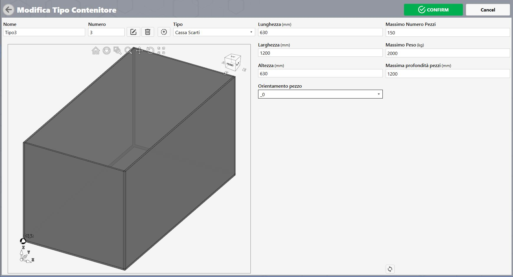
Lunghezza | Lunghezza del contenitore. |
Larghezza | Larghezza del contenitore. |
Altezza | Altezza del contenitore. |
Orientamento pezzi | 0: lunghezza pezzo → lunghezza pallet. |
Massimo numero pezzi | Massimo numero di pezzi depositabili. |
Massimo peso | Massimo peso sopportato dal contenitore. |
Massima profondità pezzi | Massima profondità/altezza pallettizzabile nel contenitore. |
La pagina Grippers offre le seguenti funzionalità (se previsto da modello es. a):

Magazzino
Nella pagina “Magazzino” è possibile visualizzare i dati di ogni pinza disponibile, qual è montata e comandare un cambio gripper:
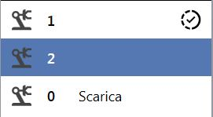 | Pinze  |
 | # Gripper |
Cambia pinza |
Dettagli Gripper
Per ogni gripper sono definite alcune proprietà
Tempo soffio | Tempo di attesa dopo aver attivato il soffio prima di spegnerlo |
Distanza GoWay | Distanza di stacco e primo allontanamento del pezzo da banco/tappeto dopo la presa |
Distanza sicurezza | Distanza di stacco secondaria dopo la presa del pezzo e distanza di stacco dopo il rilascio del pezzo |
Distanza ricerca | |
Attesa GET | Tempo di attesa dopo aver attivato il vuoto in presa pezzo |
Attesa PUT | Tempo di attesa dopo aver disattivato il vuoto in rilascio pezzo |
Attesa vuoto | Tempo di attesa dopo aver attivato il vuoto del segnale di presenza vuoto |
Descrizione | Descrizione della pinza |
Nella pagina delle stazioni è possibile gestire le stazioni di carico e di scarico e la loro configurazione impostato i path corretti per lavorare in modo congiunto con la macchina e il robot.
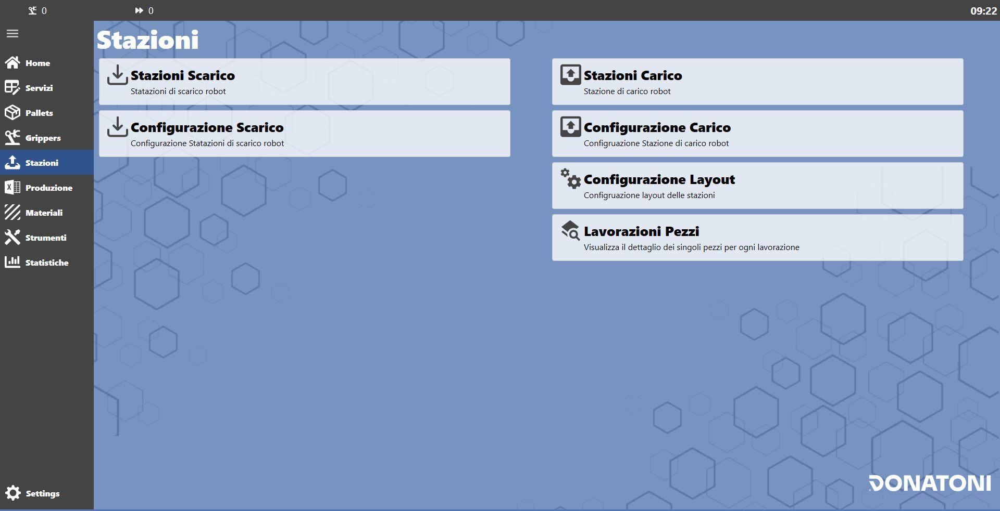
Stazioni
Le operazioni sulle stazioni qui riassunte verranno illustrate nei seguenti capitoli:
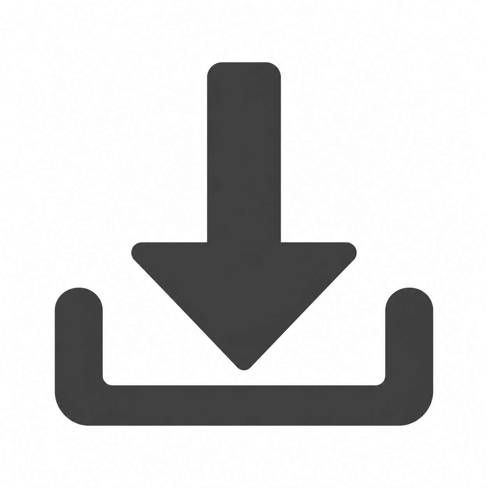 | Stazioni Scarico |
Configurazione Scarico | |
Stazioni Carico | |
Configurazione Carico | |
Configurazione Layout | |
Lavorazione pezzi |
E’ possibile visualizzare il contenitore e lo stato per ogni stazione presente nella cella
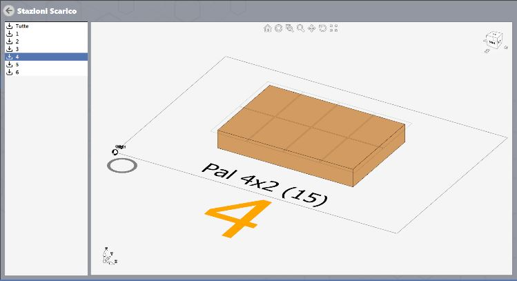
In questo menu è possibile visualizzare i parametri riguardanti le stazioni di scarico.
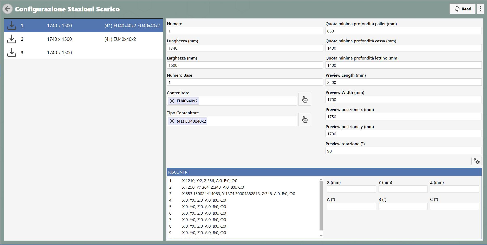
Parametri
Numero | Numero della stazione. |
Lunghezza | Lunghezza della stazione di pallettizzazione. |
Larghezza | Larghezza della stazione di pallettizzazione. |
Numero base | Numero della base utilizzata per quella stazione. |
Contenitore | NPal contenuto nella stazione. |
Tipo contenitore | PalType contenuto nella stazione. 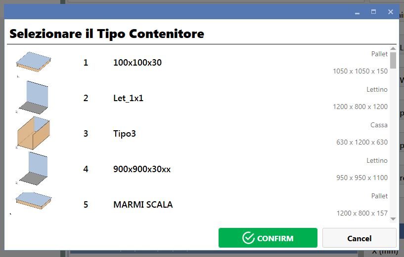 |
Quota minima profondità pallet | Profondità rispetto l’origine stazione oltre la quale il robot non può andare. |
Quota minima profondità cassa | Profondità rispetto l’origine stazione oltre la quale il robot non può andare. |
Quota minima profondità lettino | Profondità rispetto l’origine stazione oltre la quale il robot non può andare. |
Preview length | Lunghezza della stazione nel menu “configura preview stazioni”. |
Preview width | Larghezza della stazione nel menu “configura preview stazioni”. |
Preview posizione X | Posizione X della stazione nel menu “configura preview stazioni”. |
Preview posizione Y | Posizione Y della stazione nel menu “configura preview stazioni”. |
Preview rotazione | Rotazione della stazione nel menu “configura preview stazioni”. |
Riscontri
Quota dei riscontri utilizzati rispetto alla base della stazione
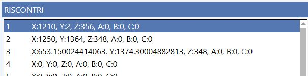
Opzioni Preview
Premendo il pulsante collocato in alto a destra sarà possibile visualizzare un menù specifico per la Preview attualmente selezionata.
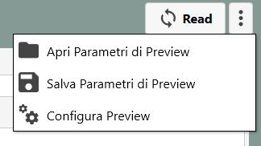
 | Apri parametri preview |
Salva parametri preview | |
 | Configura preview |
In questo menu posso visualizzare e modificare i file delle lavorazioni generate da PARAMETRIX

Barra laterale sinistra
 | Lista scarichi |
Barra superiore
Nella barra superiore sono presenti i seguenti pulsanti che verranno illustrati di seguito:
Robot CSV
Modifica CSV
Modifica Pallet
Proprietà pezzo
Copia da DB
Robot CSV
Robot CSV |
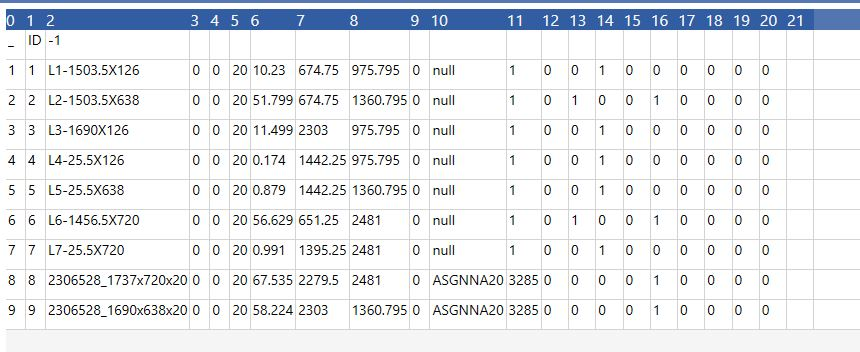
Modifica CSV
Modifica CSV |

Menù laterale in Modifica CSV
Valore | Inserire il in nuovo valore del parametro. |
 | Modifica |
Aggiungi contenitore 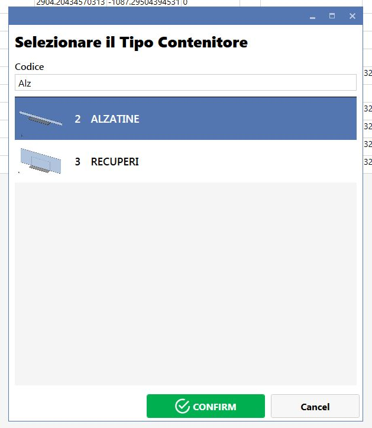 | |
 | Elimina contenitore |
 | Aggiungi al pallet 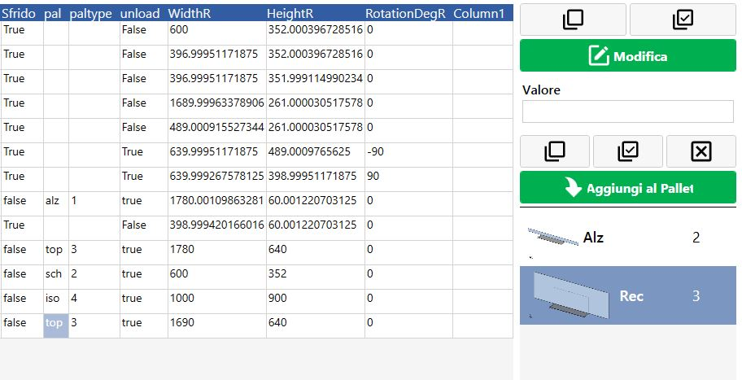 |
Modifica Pallet
 | Modifica Pallet |
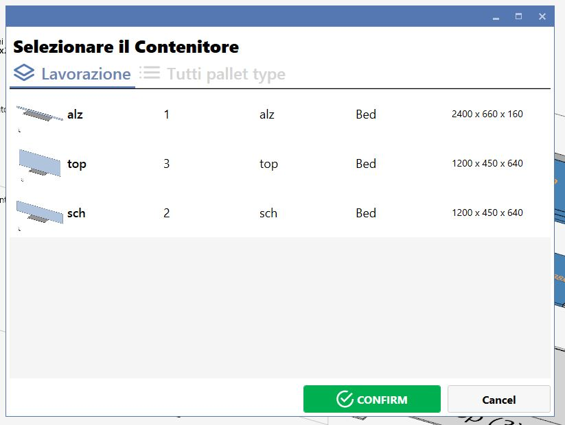
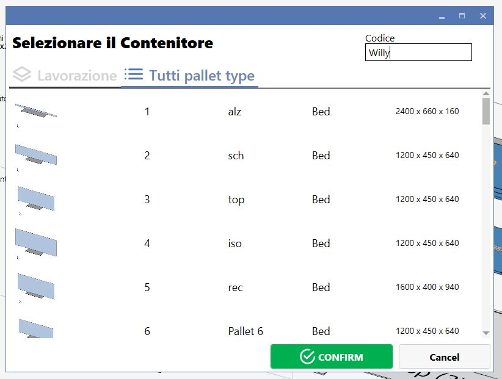
Proprietà pezzo
 | Proprietà pezzo |

Copia da DB
 | Copia da DB |
In questo menu è possibile visualizzare i parametri riguardanti le stazioni di carico
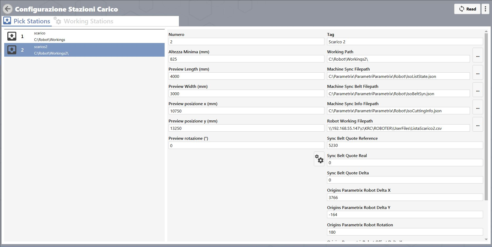
Tipologia stazioni di carico
Stazioni di presa
Specifiche delle stazioni di presa:

Stazioni di lavoro
Specifiche di tutte le stazioni di lavoro:
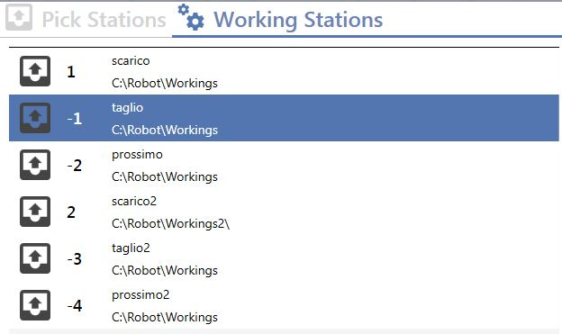
Parametri
Per entrambe le precedenti tipologie di stazioni vengono visualizzati i seguenti parametri:
Numero | Numero identificativo della stazione di carico |
Altezza minima | Altezza minima della stazione di carico |
Preview length | Lunghezza della stazione di carico nel menu “configura preview stazioni” |
Preview width | Larghezza della stazione di carico nel menu “configura preview stazioni” |
Preview posizione X | Posizione X della stazione di carico nel menu “configura preview stazioni” |
Preview posizione Y | Posizione Y della stazione di carico nel menu “configura preview stazioni” |
Preview rotazione | Rotazione della stazione di carico nel menu “configura preview stazioni” |
Tag | Nome descrittivo della stazione |
Working path | Percorso file inerente alla stazione di carico |
Machine sync filepath | Percorso file inerente alla stazione di carico |
Machine sync belt filepath | Percorso file inerente alla stazione di carico |
Machine sync info filepath | Percorso file inerente alla stazione di carico |
Robot working filepath | Percorso file inerente alla stazione di carico |
Sync belt quote reference | Sincronizzazione quota dei pezzi sul tappeto fra macchina e robot |
Sync belt quote real | Sincronizzazione quota reale dei pezzi sul tappeto fra macchina e robot |
Sync belt quote delta | Differenza fra quota reale e teorica di sincronizzazione del tappeto fra macchina e robot |
Origin parametrix robot delta X | Quota X della trasformata fra origine tappeto macchina e origine tappeto robot |
Origin parametrix robot delta Y | Quota Y della trasformata fra origine tappeto macchina e origine tappeto robot |
Origin parametrix robot rotation | Quota di rotazione A della trasformata fra origine tappeto macchina e origine tappeto robot |
Origin parametrix robot offset delta X | Correzione sulla quota X della trasformata fra origine tappeto macchina e origine tappeto robot |
Origin parametrix robot offset delta Y | Correzione sulla quota Y della trasformata fra origine tappeto macchina e origine tappeto robot |
Origin parametrix robot offset rotation | Correzione sulla quota di rotazione A della trasformata fra origine tappeto macchina e origine tappeto robot |
Si può visualizzare e modificare la configurazione grafica della cella di scarico.
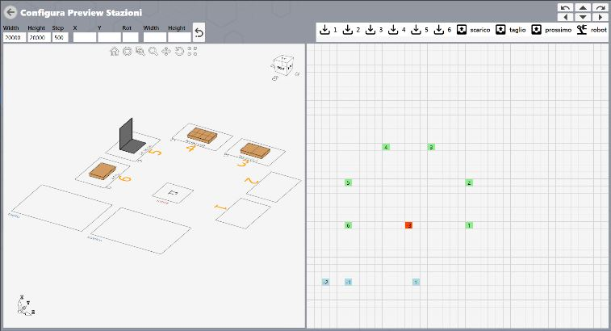
È un menu di visualizzazione dei dati e delle caratteristiche dei pezzi da pallettizzare, ad esempio il lato da lucidare
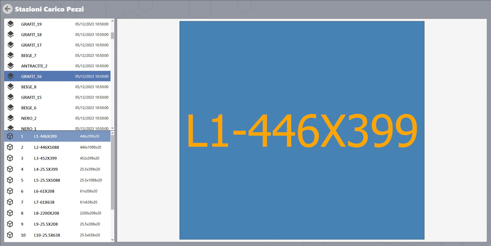
Sezione laterale sinistra
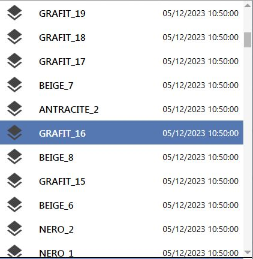 | Scelta lastra |
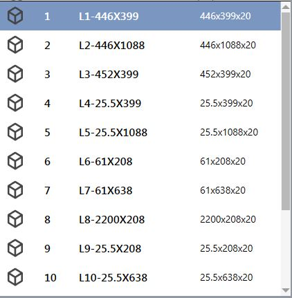 | Scelta pezzo |
In questa pagina è possibile definire i materiali.
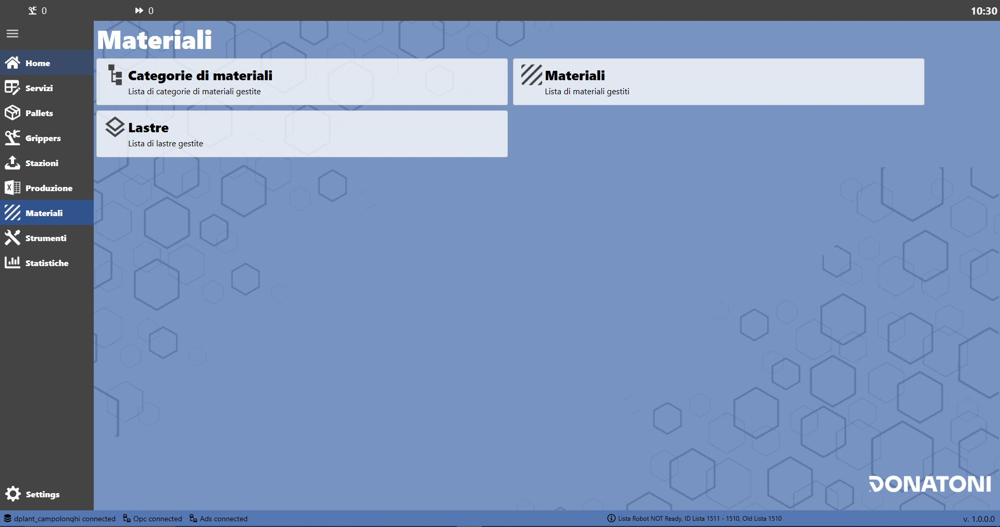
Categorie di materiali | |
Materiali | |
Lastre |
Nella pagina “categorie di materiali” è possibile visualizzare e creare/modificare le caratteristiche di una categoria del materiale dei pezzi da pallettizzare.
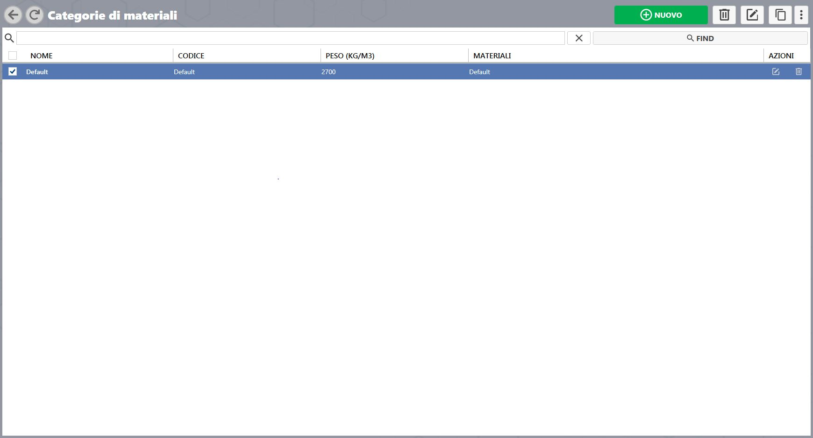
Barra superiore
 | Nuovo |
 | Elimina |
 | Modifica |
 | Duplica |
Nuovo materiale

Nome | Codice assegnato alla categoria del materiale. |
Codice | Codice assegnato alla categoria del materiale. |
Peso specifico | Peso specifico della categoria del materiale. |
Nella pagina “materiali” è possibile cercare, visualizzare e modificare le caratteristiche di un materiale dei pezzi da pallettizzare.
Barra superiore
I seguenti pulsanti sono collocati a destra della barra superiore:
 | Nuovo |
 | Elimina |
 | Modifica |
 | Duplica |
Nuovo materiale

Nome | Codice assegnato al materiale |
Codice | Codice assegnato al materiale |
Valore x m^2 | |
Peso specifico | Peso specifico del materiale |
Categoria | per selezionare la categoria di materiale interessata o crearne una nuova   |
Anteprima | si può caricare un file di anteprima del nuovo materiale utilizzato o eliminare quello presente  |
Nella pagina “lastre” è possibile cercare, visualizzare e modificare la lista delle lastre caricate dal robot.

Barra superiore
Nuovo | |
 | Elimina |
 | Modifica |
 | Duplica |
Nuova lastra
Codice | Codice assegnato alla lastra |
Larghezza | Larghezza della lastra |
Altezza | Altezza della lastra |
Spessore | Spessore della lastra |
Materiale | per selezionare il materiale interessato o crearne uno nuovo  |
Peso | Peso della lastra calcolato |
Lastra campione | Definisce se è una lastra campione o meno |
Anteprima | si può caricare un file di anteprima della lastra utilizzata o eliminare quella presente  |
In questa pagina è possibile gestire gli strumenti.
Variabili Robot | |
Posizioni di Lavoro | |
IO | |
Log Files |
Lista delle variabili di scambio Robot OpcUa _ Ads.
Barra superiore
Leggi | |
 | Leggi/Scrivi |
Sezione laterale sinistra
Tipologia Robot |
Leggi/Scrivi
Barra inferiore pannello leggi/scrivi
 | Scrittura Invia il comando di scrittura. |
Lettura continua Legge e mantiene aggiornato il valore della variabile. | |
Tempo di refresh Indica il tempo di refresh della lettura del valore della variabile. |
Leggo e scrivo le posizioni di lavoro E6Axis, E6Pos, Frame, Home.

Barra superiore
Read/Write |
Leggi/Scrivi

Barra inferiore pannello leggi/scrivi
Scrittura | |
 | Lettura continua |
 | Tempo di refresh |
Menu di visualizzazione e modifica delle posizioni di lavoro del robot, divise in funzione del tipo di posizione:
E6Axis
E6Position
FramePos
Home
Barra superiore
 | Read/Write |
Insegna |
Leggi/Scrivi
Barra inferiore pannello leggi/scrivi
 | Scrittura Invia il comando di scrittura. |
 | Lettura continua Legge e mantiene aggiornato il valore della posizione. |
 | Tempo di refresh Indica il tempo di refresh della lettura del valore della variabile. |
Menu di accesso ai file di log
È un menu che presenta i dati di scarico salvati fino a quel momento
Robot | |
Cicli di Scarico | |
Lavorazioni | |
Pezzi | |
Contenitori | |
Vista Lavorazioni |
Mostra informazioni dello scarico legate al robot e alle stazioni singole
Mostra le statistiche di scarico per ogni lastra/schema di taglio scaricato

Parametri
Nome | nome della lavorazione scaricata es. 70 |
Data inizio | data di inizio scarico pezzi |
Data fine | data di fine scarico pezzi |
Tempo | tempo impiegato per lo scarico di tutti i pezzi presenti nello schema di taglio |
Pezzi | numero di pezzi scaricato |
Contenitori | in che contenitori sono stati pallettizzati i pezzi |
Mostra le statistiche dei contenitori utilizzati
Parametri
Codice | Npal/nome del contenitore |
PalType | PalType del contenitore |
Peso | peso raggiunto dal contenitore |
Pezzi | pezzi caricati sul contenitore |
Data inizio | data di inizio pallettizzazione su quel contenitore |
Data fine | data di fine pallettizzazione su quel contenitore |
Tempo | tempo impiegato alla pallettizzazione del contenitore |
Pezzi | rimanda alla lista dei pezzi pallettizzati su quel contenitore |
Lavorazione | rimanda alla lista lavorazioni pallettizzate su quel contenitore |
Mostra le statistiche di ogni ciclo di scarico, cioè per ogni presa e deposito di un pezzo.

Parametri
Working | lavorazione alla quale apparteneva il pezzo. |
Data di inizio | data di inizio pallettizzazione del pezzo. |
Data fine | data di fine pallettizzazione del pezzo. |
Time | tempo impiegato per concludere il ciclo di scarico del pezzo. |
Piece | nome pezzo depositato. |
P count | numero pezzo depositato. |
Station | numero stazione di deposito pezzo. |
Pallet name | Npal/nome del contenitore di deposito del pezzo. |
Pallet type | PalType del contenitore di deposito del pezzo. |
 | Esporta la lista di tutti I cicli di scarico eseguiti come file. |
Mostra le statistiche dei pezzi scaricati dal robot.

Parametri
Nome | nome del pezzo scaricato. |
Nome lavorazione | nome della lavorazione nella quale era presente il pezzo. |
Commessa | numero della commessa. |
Dimensione | dimensione del pezzo scaricato. |
Data inizio | data inizio scarico pezzo. |
Data fine | data fine scarico pezzo. |
Tempo | tempo utilizzato per scaricare il pezzo. |
Lavorazione | rimanda alla lavorazione della quale faceva parte il pezzo. |
Contenitori | rimanda alla lista del contenitore nella quale è stato pallettizzato il pezzo. |
Mostra tutte le lavorazioni/schemi di taglio scaricate da robot.